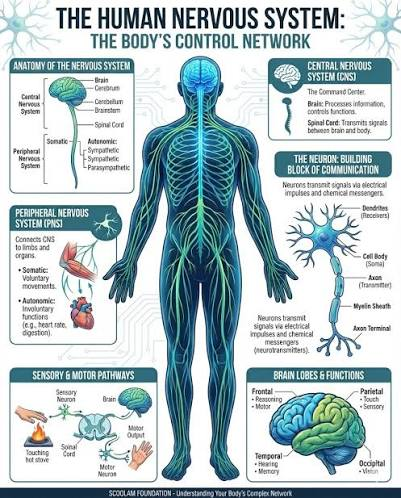

What the Nervous System Is Made Of
Nervous Tissue Composition
Neurons
Nerve cells that generate and transmit bioelectric signals (impulses) via dendrites and axons.
Neuroglia
Accessory ("glue") cells that support, nourish, insulate, and protect neurons — they don't transmit impulses.
Blood Vessels
Supply neural tissue with oxygen and glucose — neurons have very high, constant metabolic demand.
Connective Tissue
Wraps and bundles nerves and nervous system organs, providing structural support and protection.
Two Major Divisions
Central vs. Peripheral Nervous System
Central Nervous System (CNS)
| Structures | Brain and spinal cord |
| Location | Encased in the skull and vertebral column |
| Key cell type | Interneurons (integration/decision-making) |
| Function | Interprets incoming signals and decides on a response |
Peripheral Nervous System (PNS)
| Structures | Cranial nerves (from the brain) and spinal nerves (from the cord) |
| Location | Extends throughout the rest of the body |
| Key cell types | Sensory (afferent) and motor (efferent) neurons |
| Function | Carries signals into and out of the CNS |
Reference — The Human Nervous System

The CNS (brain + spinal cord, shown in the torso/head) is the command center. The PNS (branching nerve network) connects the CNS to every limb and organ, carrying sensory information in and motor commands out.
Sensory → Integrative → Motor
How the Nervous System Responds to Stimuli
Reference — A Withdrawal Reflex

Touching a hot surface triggers a sensory receptor, which sends an impulse along a sensory neuron to the spinal cord. An interneuron there integrates the signal and activates a motor neuron, which signals the biceps to contract and pull the hand away.